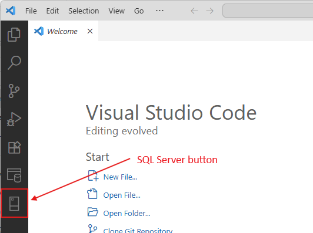
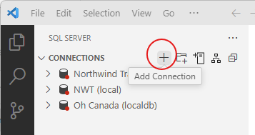
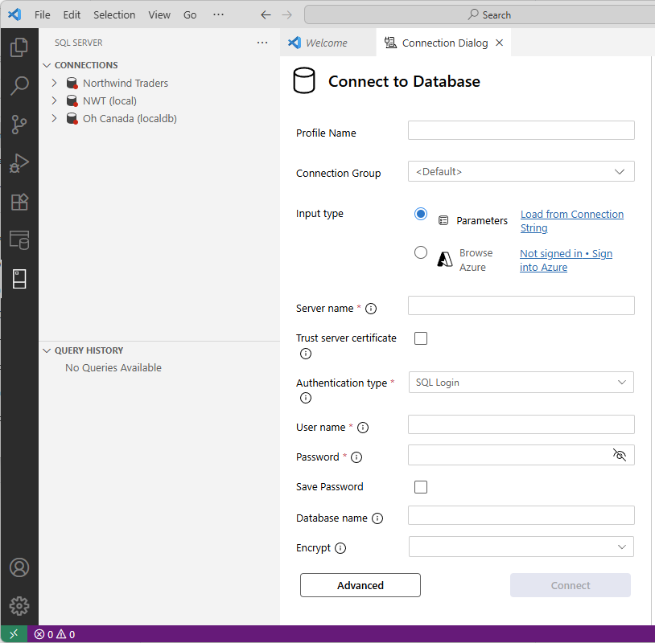
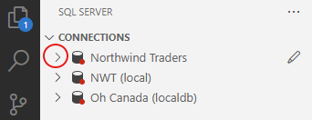
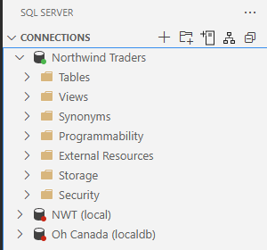

Connecting to a Database#
There is a video that covers everything in this chapter. Use the video if you prefer.
https://www.youtube.com/watch?v=4zR3CUIYXNA
Connecting for the First Time#
During the semester, we will connect to many databases. This chapter provides instructions on how to connect to a database for the first time in VS Code.
Instructions#
Open VS Code
On the toolbar on the left, click on the SQL Server button, which looks like this:

Next to the word CONNECTIONS, click the + button.

You will see a form like that below. Fill in these fields and press the Connect button at the bottom.
Profile name: your name for the connection. This can be anything, but I recommend that you use the same name as the database.
Server name: acc3323.database.windows.net
Authentication type: SQL Login
User name: student
Password: I will provide this on Canvas and during class.
Save Password: I recommend that you check this box.
Database name: The name of the database. This must be spelled exactly.

If your connection is successful, there should be a green dot next to the connection name in the pane on the left.
Reconnecting to a Database#
Once you have created and saved a connection to a database (as shown above), reconnecting is very simple.
First, click on the SQL Server button in the left toolbar.
Identify the database to which you will connect. It will have a red dot before its name. To the left of the red dot is a symbol that looks like a greater-than sign (>). Click that.

When you click that >, VS Code will establish a connection to the database. You will then see a green dot next to the database name, as well as the following:
